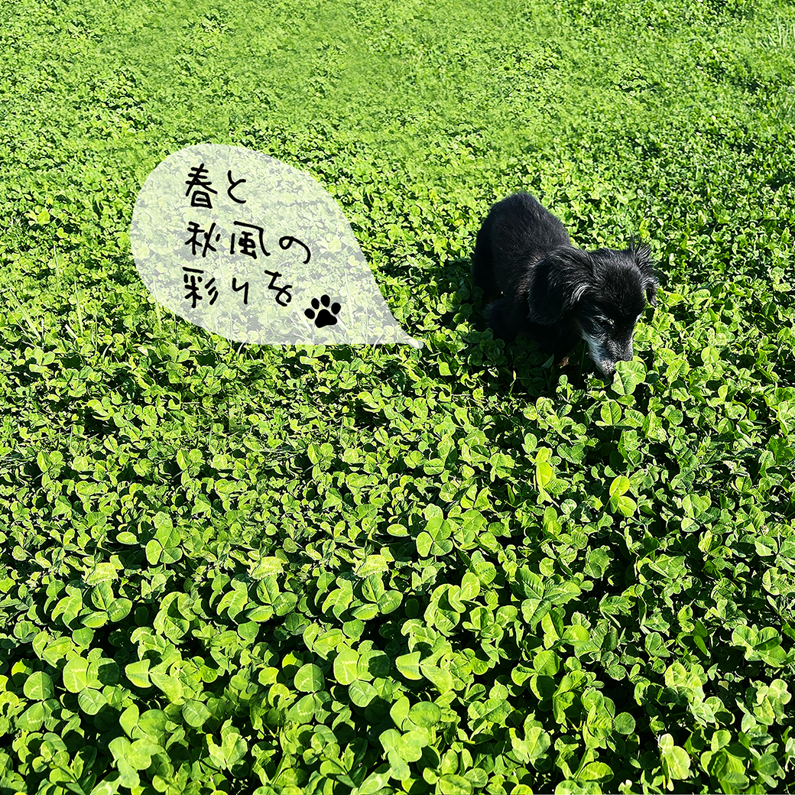

Song page
春と秋風の彩りを
朝になる直前の青さを閉じ込めたバラード。
YUKIは、夜の記憶を映画のように聴かせるアーティストプロジェクト。
春と秋風の彩りを - Lyrics
残暑の匂い､残ったままで
涼しげな風､吹き始めました｡
何度過ごしただろう､変わらない日々｡
この普通の日がとても幸せで｡
映写機のように､移り変わりゆく｡
想い出のピースを集めてたら､
温かい手が僕に触れている｡
そうだ！一人ぼっちじゃなかったんだ｡
小さな頃にはすでに溢れ出すほどの愛で
僕の我儘さえ､包み込んでくれたね｡
吹き荒れる風に僕の
声を乗せて届けたいあなたへと
サヨナラは言わないでいるよ｡
心の中にいるから｡
後悔なんてしないで｡
後ろなんて見なくていい｡
これからは違った形で､
一緒に歩いていこう｡
見慣れた部屋に､見慣れた姿
まるで絵画を見ているみたいだ｡
多彩な色で描かれていく
一つだけの物語｡
枯葉舞う風に僕の
想いを乗せて届けたいあなたへと
ありがとうだけは伝えたい｡
優しさを忘れないで｡
長く伸びた道程も､
ちょっと一眠りするよ｡
アナタとの夢を見れるように｡
秋風の彩りを｡

季節の匂いは、 記憶の奥で静かに揺れている。
"君と歩いた風だけが、今も残っている。"
STREAM NOW
春と秋風の彩りを
Other songs